|
|
|
|
|
|
|
|
This section details how to create the following items:

You can also create your own switches by adding touch animation to graphical objects such as rectangles, images, pies, and so on. See Section 9.2.7, Creating a Custom Switch.
You can configure the Switch, Radio Button, Selector, Actions, and Panel Actions to perform some of the following operations:
Toggle on/off the specified variable Bit.
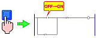
Write a constant or a variable's calculated value to the specified variable Bit.
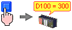
Change panels.
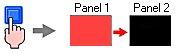
Change languages.
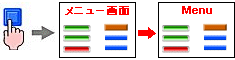
Open or close a popup window.
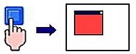
Write the specified data in multiple variables.
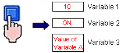
Execute a script.
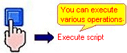
Play sound.
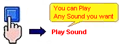
Restart Runtime or open the Runtime configuration menu.
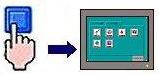
Execute an operation after a specified time period (delay switch).
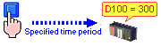
Turn on one radio button at a time in a group of radio buttons.

Control a Video Display. A switch can be set up to do the following: stop, pause, play, rewind, fast forward, record, snapshot, start of video, end of video, toggle live/ play. (Switches only)
Write a specified string to a string variable.
Run operations on an alarm summary with an alarm operation switch. (Switches only)
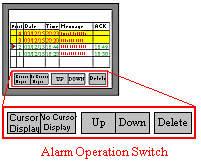
Display System Information, such as the Project Name, Target Type, and memory used by the project.
Email a message to a recipient on an alarm or touch condition.